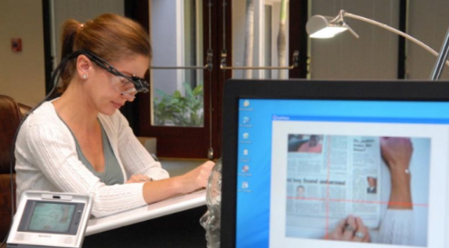
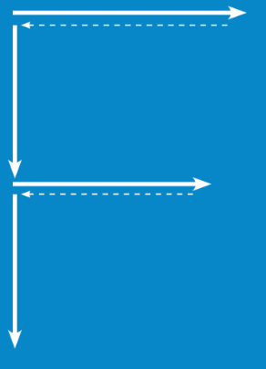
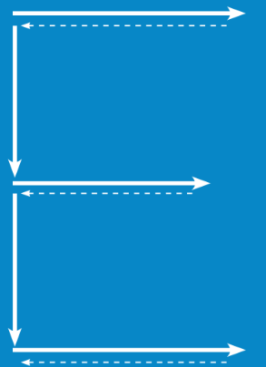
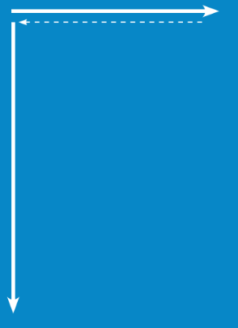
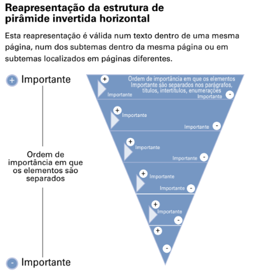

O estudo mais recente do Poynter Institute afirmou que as pessoas leem em profundidade nos websites de jornais, contradizendo pesquisas anteriores. Embora as conclusões sejam contraditórias, elas refinam e reforçam o conceito fundamental de que é preciso estruturar textos para o ambiente digital, tendo em mente o comportamento e os objetivos do usuário.
A DESTRUIÇÃO DO "MITO" DA LEITURA SUPERFCIAL
O Eyetrack07 foi um estudo que analisou a leitura de websites jornalísticos por meio do rastreamento dos movimentos dos olhos dos participantes. Foram registradas mais de 102 mil detenções ou fixações do olho, e a conclusão foi que os leitores online leram com mais profundidade do que os leitores impressos. Segundo a pesquisa, os participantes online leram 77% do texto que escolheram, enquanto os participantes em formatos impressos em formato standard leram 62% e em formato tablóide leram 57%. A superficialidade de leitura também foi posta em evidência pela forma como os usuários liam apenas o primeiro terço dos títulos. A pesquisa Eyetrack07 contrasta com a de 2000, que afirmava que a leitura era superficial, mas também destacava que, quando os participantes encontravam algo de interesse, a leitura era mais profunda. A pesquisa Eyetrack III, de 2004, revelou que os parágrafos mais curtos tiveram melhor desempenho que os maiores.
O PONTO DE ENTRADA DA PÁGINA
Os estudos Eyetrack 2000 e Eyetrack III coincidem que o ponto de entrada para a página inicial é o texto. No entanto, o Eyetrack 2000 estabelece uma diferença entre o texto dos títulos destacados e o texto das listas de artigos e parágrafos que os descrevem. As descobertas do Eyetrack III indicam que os títulos proeminentes atraem a atenção com mais frequência quando a página inicial é aberta, e as fotos geralmente não são o ponto de entrada para a página inicial. Em vez disso, o texto domina as telas de PC em termos de ordem e tempo gasto. Jakob Nielsen analisou os resultados do Eyetrack 2000 e criticou a metodologia e seleção de participantes do estudo, afirmando que suas conclusões não poderiam ser generalizadas. Os estudos de Nielsen entre 1994 e 1997 tiveram objetivos, usuários e metodologias semelhantes, e ele concluiu que o texto era o ponto focal da atenção do usuário em sites. Os estudos marcaram uma mudança de 180 graus em relação ao primeiro estudo do Eyetrack em 1990, que avaliou o comportamento do usuário em jornais impressos e determinou que os leitores eram atraídos por fotos primeiro. O Eyetrack07 descreve textos como dispositivos direcionais nos quais os usuários dependem para decidir qual conteúdo específico visualizar, e esse é o ponto de entrada para os usuários nas páginas. O relatório afirma que quase metade dos leitores online (48%) visualizou dispositivos direcionais primeiro ao entrar na página.
LEITORES "ESCANEADORES" E LEITORES QUE LEEM PALAVRA POR PALAVRA

As conclusões do estudo EyeTrack07 sobre a profundidade de leitura online contrastam com as afirmações de Nielsen de que as pessoas não leem grandes quantidades de texto na tela por causa de sua baixa resolução, o que torna a leitura cerca de 25% mais lenta. Nielsen afirma que a proporção de usuários que leem palavra por palavra em uma página da web é mínima e, em vez disso, eles examinam o texto e escolhem palavras-chave, frases e parágrafos de interesse, enquanto pulam partes que lhes interessam menos. O estudo EyeTrack07 divide os usuários em duas categorias: scanners e leitores metódicos, com 53% de scanners e 47% de leitores metódicos. Os autores atribuem o comportamento de digitalização às múltiplas possibilidades oferecidas por uma página inicial que aponta para 40-60 histórias. Eles sugerem que o estudo da Poynter pode ter direcionado os usuários a ler enquanto o estudo de Nielsen pediu que eles encontrassem informações, o que poderia explicar as diferenças nos resultados.
PADRÃO COM QUE OS USUÁRIOS PERCORREM A TELA DO COMPUTADOR
Jakob Nielsen utilizou a tecnologia EyeTrack em 2006 para identificar um padrão de leitura em forma de F (ou E ou L invertido) em conteúdos na web, com movimentos horizontais e verticais. Ele também criou um mapa de calor que mostra as zonas de maior concentração de visualizações, indicadas pela cor vermelha.
PADRÃO DE LEITURA EM F

De acordo com as pesquisas de Jakob Nielsen, existe um movimento horizontal na parte superior da área de conteúdo, da esquerda para a direita, e ao voltar há um movimento vertical pela parte esquerda da tela; há um segundo movimento horizontal, mas mais curto que o anterior e, finalmente, um movimento vertical na parte esquerda da tela. As setas indicam a trajetória.
PADRÃO DE LEITURA EM E

O padrão em F, adverte Jakob Nielsen, algumas vezes toma a forma de E. As setas indicam a trajetória.
PADRÃO DE LEITURA EM L INVERTIDO

O padrão em F, adverte Jakob Nielsen, algumas vezes toma a forma de L invertido, com a barra horizontal na parte superior da tela. As setas indicam a trajetória.
CONCLUSÃO DA PESQUISA
A pesquisa EyeTrack III concluiu que os usuários geralmente começam a ler a página inicial de um site pela parte superior esquerda, focando na matéria principal ou título dominante, o que reforça as conclusões de Nielsen. A pesquisa também indicou que os usuários geralmente escaneiam a lista de títulos na página inicial, concentrando-se na parte esquerda deles e gastando menos de um segundo em cada título. Eles só continuam lendo se as primeiras palavras chamarem sua atenção. Isso pode ser interpretado como uma manifestação de superficialidade na leitura. Os pesquisadores recomendam que as primeiras palavras dos títulos devem ser atraentes para captar a atenção do usuário.
CAPÍTULO 2 - INCORPORAÇÃO DO CONCEITO DE USABILIDADE PARA AFERIR A QUALIDADE DO TEXTO NO AMBIENTE DA WEB
A usabilidade é definida como a efetividade, eficiência e satisfação com que os usuários podem realizar tarefas específicas em um ambiente específico. Jakob Nielsen, um especialista em usabilidade, destaca que a usabilidade é crucial para a sobrevivência de um website, pois os usuários tendem a abandonar sites difíceis de usar, confusos ou com informações mal organizadas. O texto também menciona um estudo clássico realizado por Nielsen, no qual ele avaliou a usabilidade de diferentes formas de apresentação de textos em um site turístico sobre Nebraska. O estudo envolveu tarefas de busca e avaliação realizadas pelos usuários, medindo o tempo de execução, a taxa de erros e a memória associada. Nielsen concluiu que os usuários preferem linguagem objetiva, textos concisos e um design escaneável com o uso de listas.
CAPÍTULO 3 - PIRÂMIDE INVERTIDA
O autor menciona que, embora muitas redações acreditem que a pirâmide invertida está fora de moda e tenha sido substituída por outras técnicas narrativas, ela ainda é amplamente utilizada e eficaz para apresentar informações de forma clara e concisa. A estrutura da pirâmide invertida consiste em começar o texto com a informação mais importante e prosseguir na ordem decrescente de importância. Isso permite que os leitores capturem rapidamente os principais pontos da notícia. O autor destaca que essa estrutura é especialmente adequada para o ambiente digital, onde os usuários tendem a ler apenas a parte superior de um artigo.
Além disso, o texto explora diferentes níveis de utilização da estrutura da pirâmide invertida, desde textos lineares em uma única página da web até textos divididos tematicamente em várias páginas. No geral, a estrutura da pirâmide invertida continua sendo uma ferramenta valiosa para a apresentação de conteúdo online de forma eficiente e envolvente. O autor cita o conceito de estratificação proposto por Robert Darnton, que sugere estruturar textos em camadas organizadas como uma pirâmide, permitindo diferentes níveis de profundidade e interatividade para os leitores.
Além disso, o texto aborda o uso da pirâmide invertida e modelos de titulação no contexto da escrita para a web. Explica que os títulos devem adquirir sentido por si mesmos, pois podem aparecer descontextualizados em resultados de busca, boletins e menus de favoritos. Discute a repetição de informações quando títulos, chamadas e parágrafos iniciais são utilizados na página inicial, sugerindo a diferenciação tipográfica da primeira frase do primeiro parágrafo como uma alternativa. Também menciona a necessidade de adaptar textos que não se encaixam na estrutura da pirâmide invertida, como crônicas ou editoriais, e a importância de definir um ângulo principal ao reescrevê-los para a web.
CAPÍTULO 4 - CONSTRUA A PIRÂMIDE
O conceito de pirâmide invertida horizontal consiste em transmitir informações essenciais logo no início do título, primeira frase do parágrafo, intertítulos, itens de uma enumeração, legendas, sumários e links de hipertexto.

Ao criar um texto, é fundamental considerar a forma como ele é apresentado e como isso pode afetar sua efetividade e a capacidade de atrair a atenção dos leitores. No contexto digital, onde a concorrência por atenção é intensa, estratégias que facilitem a leitura e maximizem o impacto do conteúdo são essenciais. Uma recomendação valiosa é posicionar os elementos mais informativos à esquerda, aproveitando o padrão de leitura em forma de F observado em telas de computador.
Quando navegamos por uma página da web, é comum que nosso olhar inicialmente se concentre no lado esquerdo da tela. Essa tendência ocorre porque estamos acostumados com a leitura da esquerda para a direita, um padrão predominante em muitos idiomas ocidentais. Ao posicionar informações relevantes à esquerda, aumentamos as chances de que elas sejam prontamente identificadas e compreendidas pelos leitores.
Existem várias estratégias que podem ser adotadas para alcançar esse objetivo. Uma delas é reorganizar a ordem dos elementos em uma frase, começando com as palavras mais relevantes. Essa abordagem permite que os leitores capturem a essência do conteúdo de forma mais rápida, mesmo que estejam apenas realizando uma leitura superficial. Ao transmitir a mensagem principal de maneira eficiente, aumentamos o impacto do texto.
Outra técnica útil é utilizar a voz passiva para destacar os elementos importantes. Ao construir frases nessa forma gramatical, o foco é direcionado ao objeto da ação, em vez do sujeito que a realiza. Essa estratégia possibilita um destaque mais efetivo das informações relevantes, chamando a atenção dos leitores de maneira mais impactante. Ao utilizar a voz passiva adequadamente, enfatizamos as informações-chave e melhoramos a compreensão geral do texto.
Além disso, o uso de dois pontos pode ser uma maneira eficaz de chamar a atenção para o que vem a seguir. Essa pontuação cria uma expectativa nos leitores, indicando que informações importantes serão apresentadas logo em seguida. Ao destacar o conteúdo subsequente, aumentamos a probabilidade de que os leitores dediquem tempo para absorver as informações mais relevantes, gerando maior engajamento e compreensão.
É importante também evitar o uso de palavras desnecessárias, como artigos e expressões de ligação, no início dos títulos. Esses termos geralmente não trazem informações significativas e podem dificultar a compreensão imediata do leitor. Ao eliminar essas palavras supérfluas, tornamos o título mais objetivo e direto ao ponto, aumentando a probabilidade de que os leitores se interessem pelo conteúdo completo.